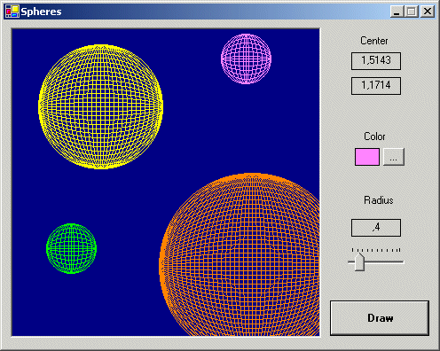
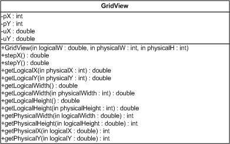

Title: Spheres in GDI+ Author: Alessio Saltarin Email: AlessioSaltarin@hotmail.com Environment: Visual Studio.NET, C# Keywords: GDI+, Sphere, Conversions, Viewport Level: Intermediate Description: Using GDI+ to draw spheres in a 2D environment Section General C# SubSection Multimedia

During the development of a videogame skeleton, one of my biggest concern was the drawing of a large interstellar map. Since it was just a skeleton, implementing 3D graphics with OpenGL or Direct3D was not an option. I soon discovered that GDI+ could very well fit my needs. So I had to face mainly two issues:
The included code show how we solved those problems. It could be helpful to show how easy is to add graphics and shapes using GDI+ and .NET.
When we want to display something using GDI+, we must reason in terms of pixels.
The Graphics object can be obtained by calling the CreateGraphics
method from any inherited WinForm control. So, for instance, a Panel is an
optimal choice as a drawing surface, much better than the form itself. When a
Graphics object is initialized, it's geometry is based on the pixel displayed,
being (0,0) the left-upper corner of it.
If I must draw a line, say, from the point (10,10) to the point (30,30) I must call:
//
// The main Graphics object
//
Graphics panelGraphics = this.panel.CreateGraphics();
panelGraphics.DrawLine(new Pen(Color.Black,0.2F),10,10,30,30);
Since every method and property of GDI+ is based on pixels, drawing items in terms of some other unit of measure implies a conversion. Also, when we use "real world" formulas, they must be adapted to the "pixel" logic. Instead of spreading the conversions throughout the code, a class is what it's needed.

The GridView class provides the methods to pass from a "pixel" geometry to some other "logical units" geometry. So, when you have to draw a rectangle with a width of 4.5 cm and an height of 3.0 cm to a 400x500 panel, all you have to do is:
GridView
with desired width of panel in logical units (if you want to
display the 4.5 wide rectangle, a logicalW parameter of 10.0 seems
perfect)
In the case above the GridView will be constructed with
//
// GridView initialized for a 400x500 pixel panel of 10.0 cm wide
//
GridView gv = new GridView(10.0,400,500);
Now, if you want to know how many pixel in this panel a rectangle of 4.5 cm wide is in pixels, or if you want to know where the point (1.2cm,2.4cm) is, you may use:
//
// Conversions
//
int pixelWidth = gv.getPhysicalWidth(4.5);
int pX = gv.getPhysicalX(1.2);
int pY = gv.getPhysicalY(2.4);
When the GridView
is initialized, the panel has now 2D cartesian axis (in the downloadable example, the length of them is 5.0 and the coordinates are displayed
on top right).
An object of the class Sphere can be initialized like below:
//
// Initializing Sphere object
//
Sphere s1 = new Sphere(gv,r,this.centerX,this.centerY);
s1.SphereColor=this.txtColor.BackColor;
where
gv
is the initialized GridView object
r
is the sphere radius
centerX
is the X coordinate of the center (in logical units)
centerY is the Y coordinate of the center (in logical units)
The algorithm for drawing the sphere is very simple, and it is based on drawing arcs in a rectangle whose dimensions shrink. The algorithm draws the arcs first from right to left, then from top to bottom.
private void drawArcs(Graphics g, Pen color, Rectangle r)
{
int x1=r.Left+r.Width/2;
int y1=r.Top;
int x2=x1;
int y2=r.Top+r.Height;
int x3=r.Left;
int y3=r.Top+r.Height/2;
int x4=r.Left+r.Width;
int y4=y3;
// draw axis
g.DrawLine(color,x1,y1,x2,y2);
g.DrawLine(color,x3,y3,x4,y4);
// right-left arcs
for (int j=r.Width; j>0; j-=10)
{
int left = r.Left+(r.Width-j)/2;
Rectangle rc = new Rectangle(left,r.Top,j,r.Height);
g.DrawArc(color,rc,0.0F,180.0F); // 0-180 degrees
g.DrawArc(color,rc,180.0F,360.0F); // 180-360 degrees
}
// top-bottom arcs
for (int j=r.Height; j>0; j-=10)
{
int top = r.Top+(r.Height-j)/2;
Rectangle rc = new Rectangle(r.Left,top,r.Width,j);
g.DrawArc(color,rc,270.0F,450.0F); // 270-90 degrees
g.DrawArc(color,rc,90.0F,270.0F); // 90-270 degrees
}
}
Modifying the number of loops (j-=10) you can obtain finer wires. You can also modify the width of the Pen in order to get different results.
When you draw something on a Control, on a Panel in this case, if you cover the
control with another control (or another window), the contents just drawn
disappears. For this reason, every new sphere that you draw is collected into
an ArrayList collection. Whenever the paint event is raised, I
call the paint method for every shape in the collection.